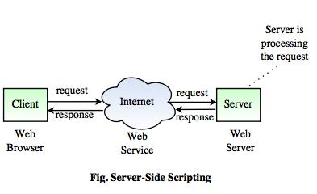

Introduction
The rise of the Internet and the World Wide web sparked a revolution not only in network communications but also in application design and development Programmers have encapsulated pieces of business functionality into distinct objects or components, and then made them available as self-contained web services that can be accessed using Internet-based protocols and tools A web application is a program that runs on a computer with a web server, while its users interact with it via a web browser or similar user agent
Web Applications
A web application is an interactive system that allows its users to execute business logic that resides on a server and to view the results of that logic through a web browser on a client workstation. The defining factor that makes the system a web application is that the server and client communicate over the Internet. In brief, web applications make the data processed by web services available to users quickly and easily through their web browsers.
Web applications are built on, which runs on a web sere the business logic is Web din the application itself internet. The web server managenduses HTTP communicate with clients over the application, and returns the applies the application, passes requests from clients to the application, and returns the application's responses to the client.
On the client side, the web applicante Marksud with a browser The application's use Omterface takes the form of HyperText Markup Language (HTML) pages that are interpreted and displayed by the browser dedditips, tot these HTML pages can contain web forms, image files, audio and video clips, and other types of displayable data
A Web application is one that can be used by accessing a Web server through the Internet or an Intranet. They are popular due to the ease of use of Web browsers as "thin" chents. Another important reason for their popularity is the ability to update and maintain Web applications without distributing and installing software in thousands of potential clients
Scripts
A script is a set of instructions. In case of web pages, scripts are instructions either to the web-browser (Client-side scripting) or to the server (Server-side scripting) Scripts provide change to a web-page Any page which changes each time you visit it or during the visit probably uses scripting. For example, all log-on systems, menus, slideshows in webpage etc use scripts In computer programming, a script is a program or sequence of instructions that is interpreted or carried out by another program rather than the computer processor (as in the case of compiled program).
There are many languages that have been conceived as script languages. The most popular script languages are PHP, JavaScript, PERL and Tcl/Tk Generally, script languages are easier and faster to code in than the more structured and compiled languages like C and C++ However, they may takes longer to run than a compiled program since each instruction is being handled by another program first rather than directly by the basic instruction processor.
Scripting language is a new style of programming language that is different from the system programming languages. These languages can be embedded with HTML and are commonly used to add functionality to the web page such as different menu styles, graphics displays or to serve dynamic advertisements. Scripting languages forces flexibility, rapid development and dynamic checking of web pages
Client-side Scripting
The client is the system on which web-browser is running The client-side environment used to run scripts is usually a browser. The processing takes place on the end user's computer The source code is transferred from the web server to the user's computer over the internet and run directly in the browser. The client-side scripts are interpreted by the browser These scripts are useful for making web pages more interesting and user friendly
The following steps shows how the client-side scripting works:
1. The browser sends an URL request to the server
2 Web Pages are stored on the Web Server
3. The server decides which page given the URL, to be sent back to the browser
4 The browser interprets and executes the content of the HTML page, including any scripts
.png)
Server-side Scripting
The server-side environment that runs a scripting language is a web server A user's request is fulfilled by running a script directly on the web server to generate dynamic HTML pages This HTML is then sent to the client browser. It is usually used to provide interactive web sites that interface to databases or other data stores on the server
Server-side scripting is a technique used in web development which involves employing scripts on a web server which produces a response customized for each user's request to the website.
Server-side web scripting is mostly about connecting web sites to backend servers, processing data and controlling the behavior of higher layers such as HTML and CSS This enables the following types of two-way communication:
Server to client: Web pages can be assembled from backend-server output.
Client to server: Customer-entered information can be acted upon.
Common examples of client-to-server interaction are online forms with some drop- down lists (usually the ones that require you to click a button) that the script assembles dynamically on the server.
Server-side scripting products consist of two main parts:
The scripting language
The scripting engine (which may or may not be built into the web server).
The engine parses and interprets pages written in the language.
